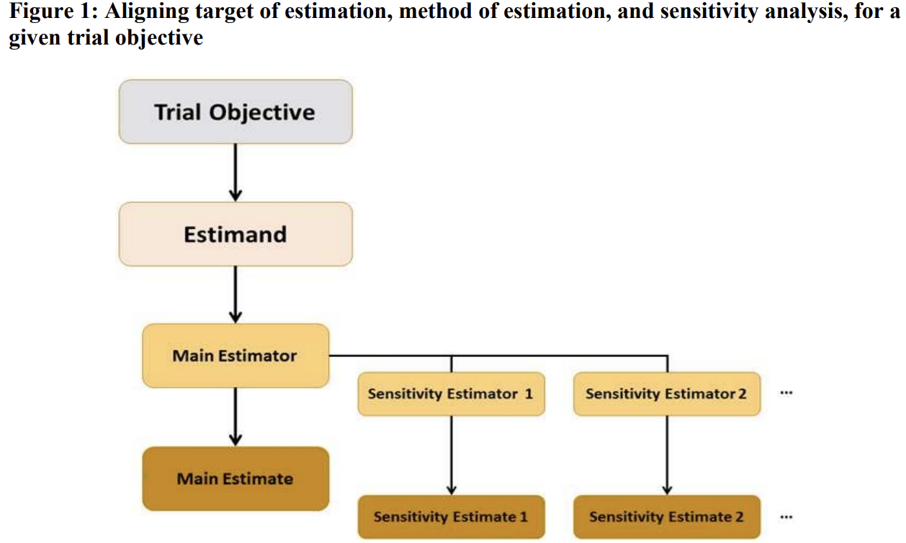

My note of E9(R1)
The purpose of this note is to clarify (FDA E9(R1)):
- Endpoint, estimand, intercurrent event;
- Strategies of handling intercurrent event.

Estimand contains four components:
- Population: patients targeted by the scientific question. ex. ITT population, randomized patients who satisfying I/E criteria’s.
- Endpoint: measures required to address the scientific question (to be obtained for each patient). ex. glucose at wk16.
- Intercurrent event: the specification of how to account for intercurrent events to reflect the scientific question of interest. ex. Discontinue from study treatment due to lack of efficacy.
- Population-level summary for the variable: usually proportion of glucose or difference between treatment arms of proportion of glucose.
Distinguishing intercurrent event and missing
- Intercurrent event influent what to estimate. ex. D/C due to lack of efficacy tells us that drug may not be useful. Intercurrent event may not include missing. ex. In some trials, after using rescue medicine, patients will still stay in trial and data is still collected.
- Missing represents the limitation of data. Missing may be completely random and do not provide information about scientific question of interest. ex. loss to follow up due to COVID-19.
Five strategies to handle intercurrent event
Consider an example, let endpoint be glucose at wk 34 and intercurrent event be taking rescue medicine.
- Treatment policy strategy: Ignoring IC event since it is irrelevant to trial objective. ex. after patient takes rescue medicine, we still collect the data and analysis the data as collected.
- Note: Treatment policy may sounds slimilar to as observed analysis. However, they are actually different with respect to the conclusion they can make. ex. Considering a treatment policy trial with arms drug + rescue vs plb + rescue, then it tries to answer the question is drug better than plb with rescue med allowed. But, as observe is how we handle missing data but not ICE.
- Composite strategy: Integrating IC event with measures of clinical outcomes as variable of interest. ex. If a patient take rescue medicine, he/she will be considered as non-responder. By this way, we integrate IC event (rescue medicine usage) into definition of responder.
- Hypothetical strategy: Guessing which value the variable would have taken if IC event does not occur (hypothetical scenario). ex. Consider observations after rescue medicine using as missing and impute them based on other available data (maybe from other patients).
- Principle stratum strategy: Analyzing within a subset of population who would not experience the IC event. ex. Only patients who adhere to treatment will be included for analysis.
- While on treatment strategy: Using measure of clinical outcome prior to the occurrence of the IC event. ex. Responder will not be defined by glucose at wk34 but glucose prior to rescue medicine using.
Mention that it is possible to combine two or more strategies together in practice. For example, consider two IC events, using rescue medicine and d/c due to AE. Then, using rescue medicine will be treated as non-responder and will be set to baseline (composite strategy). D/c due to AE will be treated as missing and will be imputed by MI (hypothetical strategy).